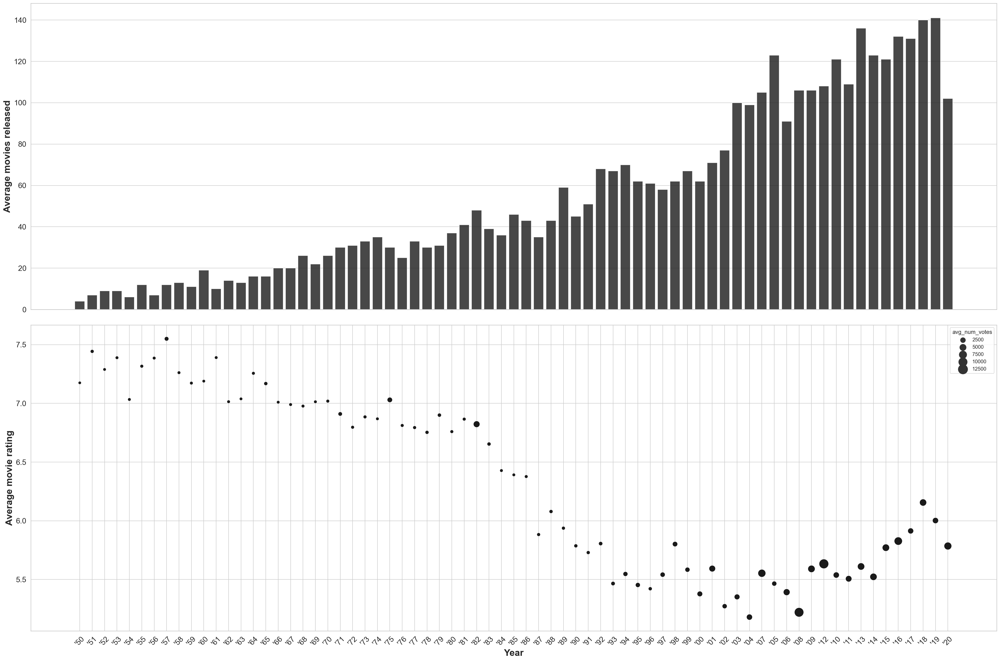
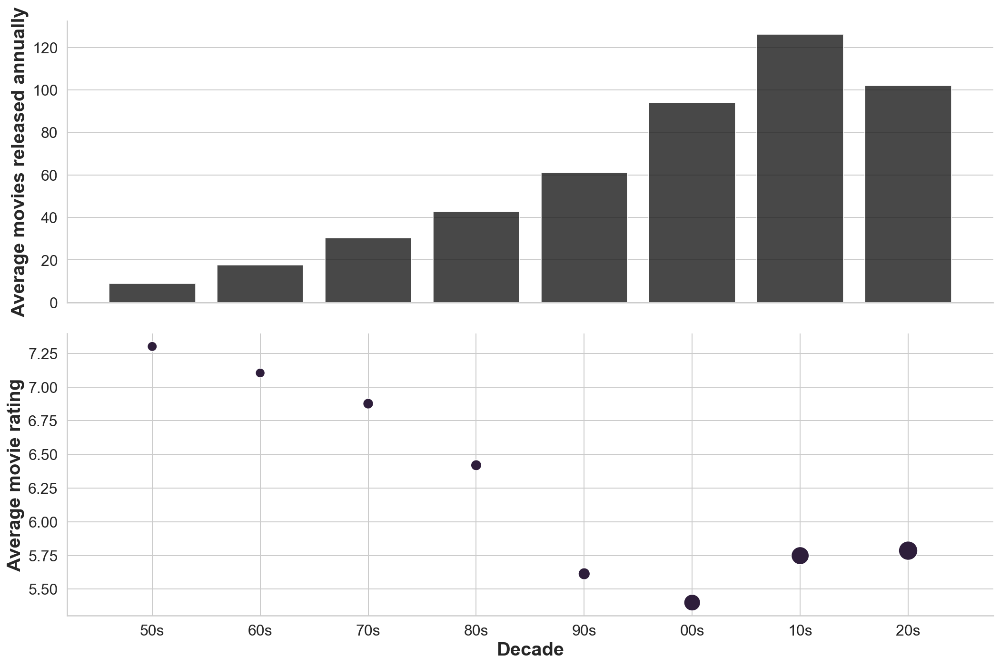

import os
from requests import get
import numpy as np
import pandas as pd
from bs4 import BeautifulSoup
import time as time
from tqdm.notebook import tqdm#----- PLOTTING PARAMS ----#
import matplotlib.pyplot as plt
from matplotlib.pyplot import cm
import seaborn as sns
sns.set(style="whitegrid")
%config InlineBackend.figure_format = 'retina'
%config InlineBackend.print_figure_kwargs={'facecolor' : "w"}
plot_params = {
'font.size' : 22,
'axes.titlesize' : 24,
'axes.labelsize' : 20,
'axes.labelweight' : 'bold',
'xtick.labelsize' : 16,
'ytick.labelsize' : 16,
}
plt.rcParams.update(plot_params)Load Dataset
The data set for the movie was scrapped from IMDB using BeautifulSoup. A template for the code used for scrapping the data is shown in the cell below.
Code
names, year, imdb_rating, metascore, num_votes = [], [], [], [], []
start_time = time.time()
requests = 0
years_url = [str(i) for i in range(1950,2006)]
page_iter = [0, 51, 101, 151, 201]
for year_url in tqdm(years_url):
for page_num in tqdm(page_iter):
#URL to parse
url = 'https://www.imdb.com/search/title/?title_type=feature,&release_date={0},{0}&countries=in&languages=hi&sort=num_votes,desc&start={1}&ref_=adv_prv'.format(int(year_url), int(page_num))
response = get(url)
#Sleep to carve out load
time.sleep(np.random.randint(1,5))
#Estimate time elapsed per request
requests += 1
elapsed_time = time.time() - start_time
print('Request:{}; Frequency: {} requests/s'.format(requests, requests/elapsed_time))
clear_output(wait = True)
html_soup = BeautifulSoup(response.text, 'html.parser')
movie_containers = html_soup.find_all('div', class_='lister-item mode-advanced')
for i, container in enumerate(movie_containers):
container_entry = movie_containers[i]
movie_name = container_entry.h3.a.text
names.append(movie_name)
movie_year = container_entry.h3.find('span',class_='lister-item-year text-muted unbold').text.strip('()')
year.append(movie_year)
#print(movie_name, movie_year)
try:
movie_rating = float(container_entry.strong.text)
imdb_rating.append(movie_rating)
except AttributeError:
imdb_rating.append(np.nan)
try:
movie_votes = float(''.join(container_entry.find('span', attrs = {'name':'nv'}).text.split(',')))
num_votes.append(movie_votes)
except (AttributeError, ValueError):
num_votes.append(np.nan)
try:
movie_metascore = float(container_entry.find('span', class_='metascore').text.strip())
metascore.append(movie_metascore)
except AttributeError:
metascore.append(np.nan)
print('Making dataframe for year {}'.format(year_url))
df_movies = pd.DataFrame({'name':names,'year':year,'rating':imdb_rating,'metascore':metascore,'num_votes':num_votes})
df_movies.to_csv('./temp_imdb_files/bollywood_data_{}.csv'.format(year_url),sep=',',header=True, index=False)
del df_moviesdf_movies = pd.read_csv('./IMDB-files/bollywood_movies_data_1950_2020_new.csv',sep=',', skipinitialspace=True)df_movies.columnsIndex(['name', 'year', 'rating', 'metascore', 'num_votes'], dtype='object')df_movies.info()<class 'pandas.core.frame.DataFrame'>
RangeIndex: 11876 entries, 0 to 11875
Data columns (total 5 columns):
# Column Non-Null Count Dtype
--- ------ -------------- -----
0 name 11876 non-null object
1 year 11875 non-null object
2 rating 7427 non-null float64
3 metascore 91 non-null float64
4 num_votes 7427 non-null float64
dtypes: float64(3), object(2)
memory usage: 464.0+ KBCleaning the data
Since we are particularly interested in release year of the movies, we can sanitize that column first. To begin, we see what are different possible strings/elements in the year.
df_movies['year'].unique()array(['1950', '1951', 'I) (1951', '1952', '1957', 'II) (1952', '1953',
'II) (1953', 'III) (1953', 'I) (1953', '1954', 'I) (1954',
'III) (1954', '1955', '1956', 'II) (1957', '1958', 'I) (1958',
'1959', 'II) (1959', '1960', 'I) (1960', '1961', '1962', '1963',
'I) (1964', '1964', '1965', '1966', '1967', '1968', 'I) (1968',
'1969', 'I) (1969', '1979', '1970', 'II) (1970', '1971',
'I) (1971', 'II) (1971', '1972', 'II) (1972', '1973', '1974',
'II) (1974', '1975', 'I) (1975', 'II) (1975', '1976', '1977',
'I) (1977', '1978', 'II) (1978', 'I) (1979', 'II) (1979', '1980',
'I) (1980', '1981', '1982', 'I) (1982', '1983', 'I) (1983',
'II) (1983', '1984', 'II) (1984', '1985', 'I) (1985', '1986',
'I) (1986', 'II) (1986', '1987', 'I) (1987', '1988', 'I) (1988',
'II) (1988', '1989', 'I) (1989', '1990', 'II) (1990', 'I) (1990',
'1991', 'I) (1991', '1992', '1993', 'I) (1992', 'II) (1992',
'I) (1993', 'II) (1993', '1994', 'II) (1994', 'I) (1994', '1995',
'1996', 'I) (1996', '1997', 'I) (1997', '1998', 'II) (1998',
'2005', '1999', 'II) (1999', '2000', 'II) (2000', 'I) (2000',
'2001', 'I) (2001', 'I) (2002', '2002', '2003', 'I) (2003', '2004',
'2007', 'I) (2005', 'II) (2005', '2006', 'I) (2006', 'II) (2006',
'I) (2007', 'III) (2007', '2008', 'I) (2008', 'II) (2008', '2009',
'I) (2009', '2012', 'II) (2009', '2010', 'I) (2010', 'II) (2010',
'IV) (2010', '2011', 'I) (2011', 'II) (2011', 'IV) (2011',
'II) (2012', 'I) (2012', '2013', 'I) (2013', 'II) (2013',
'V) (2013', '2014', 'I) (2014', 'III) (2014', 'VIII) (2014',
'II) (2014', 'IV) (2014', '2015', 'I) (2015', 'V) (2015',
'III) (2015', 'VI) (2015', 'II) (2015', 'IV) (2015', '2016',
'I) (2016', 'III) (2016', 'XVII) (2016', 'IV) (2016', 'V) (2016',
'X) (2016', 'II) (2016', 'VII) (2016', 'VI) (2016', '2017',
'I) (2017', 'II) (2017', 'III) (2017', 'IV) (2017', '2018',
'III) (2018', 'I) (2018', 'II) (2018', '2019', 'III) (2019',
'I) (2019', 'II) (2019', 'IV) (2019', '2020', 'I) (2020',
'II) (2020', 'VI) (2020', nan], dtype=object)Data pulled from the website has phantom characters alongside the dates. Hence this would need some cleaning from our end to ensure all the dates are in consistent format.
df_movies.shape(11876, 5)I am using strip to loop each date entry in the dataset and strip off any residual characters which coincide with the those mentioned in the filter. Another option is to use replace in pandas using regex filters
df_movies['year'] = df_movies['year'].astype('str')df_movies['year']=[i.strip('IIII) XVII) ( ( TV Special TV Mov') for i in df_movies['year'].tolist()]Printing the data again to check for the date entries:
df_movies['year'].unique()array(['1950', '1951', '1952', '1957', '1953', '1954', '1955', '1956',
'1958', '1959', '1960', '1961', '1962', '1963', '1964', '1965',
'1966', '1967', '1968', '1969', '1979', '1970', '1971', '1972',
'1973', '1974', '1975', '1976', '1977', '1978', '1980', '1981',
'1982', '1983', '1984', '1985', '1986', '1987', '1988', '1989',
'1990', '1991', '1992', '1993', '1994', '1995', '1996', '1997',
'1998', '2005', '1999', '2000', '2001', '2002', '2003', '2004',
'2007', '2006', '2008', '2009', '2012', '2010', '2011', '2013',
'2014', '2015', '2016', '2017', '2018', '2019', '2020', 'nan'],
dtype=object)Consistency check for the dataframe shape to ensure no funny business
df_movies.shape(11876, 5)Filtering out movies
Since IMDb is a fairly recent rating portal there are lot of movies especially those realeased pre 1980s which have low votes. Also IMDb lists every possible movie that was released in Hindi language. To better focus on credible movies I would filter out movies with low votes
votes_filter = df_movies['num_votes'] > 50 #Filter out movies which have got less than 100 votes from IMDb users
df_movies_filter_votes = df_movies.loc[votes_filter].reset_index(drop=True) #Reset the indices of the new dataframe and drop the old ones -- if not done a different column with old index is appended df_movies_filter_votes.shape(3912, 5)Convert year data entry to pandas Datetime object for convenience
df_movies_filter_votes['year'] = pd.to_datetime(df_movies_filter_votes['year'],format='%Y').dt.yearAnalyze annual movie releases
Defining a separate dataframe for doing per-year analysis
stat_list = ['year', 'total_movies_year', 'highest_rated_movie', 'movie_rating','avg_num_votes', 'avg_movie_rating']
annual_movie_stats = {keys:[] for keys in stat_list}
for year_entry in df_movies_filter_votes['year'].unique():
per_year_column = df_movies_filter_votes.loc[df_movies_filter_votes['year'] == year_entry]
try:
movie_entry_with_max_ratings = df_movies_filter_votes.loc[per_year_column['rating'].idxmax()]
higest_movie_rating = movie_entry_with_max_ratings['rating']
highest_rated_movie = movie_entry_with_max_ratings['name']
avg_movie_rating = per_year_column['rating'].mean()
total_movies = len(per_year_column)
avg_num_votes = per_year_column['num_votes'].mean()
except ValueError:
higest_movie_rating = np.nan
highest_rated_movie = np.nan
total_movies = np.nan
avg_movie_rating = np.nan
annual_movie_stats['year'].append(year_entry)
annual_movie_stats['highest_rated_movie'].append(highest_rated_movie)
annual_movie_stats['movie_rating'].append(higest_movie_rating)
annual_movie_stats['avg_movie_rating'].append(avg_movie_rating)
annual_movie_stats['total_movies_year'].append(total_movies)
annual_movie_stats['avg_num_votes'].append(avg_num_votes)df_annual_movie_stats = pd.DataFrame(annual_movie_stats, columns=annual_movie_stats.keys())df_annual_movie_stats.sample(5)| year | total_movies_year | highest_rated_movie | movie_rating | avg_num_votes | avg_movie_rating | |
|---|---|---|---|---|---|---|
| 49 | 1999 | 67 | Sarfarosh | 8.1 | 2201.328358 | 5.583582 |
| 3 | 1953 | 9 | Do Bigha Zamin | 8.4 | 293.000000 | 7.388889 |
| 69 | 2019 | 141 | 99 Songs | 8.8 | 4041.056738 | 6.002128 |
| 9 | 1959 | 11 | Kaagaz Ke Phool | 8.0 | 329.454545 | 7.172727 |
| 34 | 1984 | 36 | Saaransh | 8.2 | 286.055556 | 6.427778 |
fig, (ax1,ax2) = plt.subplots(2, 1, figsize=(30,20), sharex=True)
year_list = ["'{}".format(str(value)[2:]) for value in df_annual_movie_stats.year.to_list()]
sns.barplot(x=year_list, y='total_movies_year', color='k', alpha=0.8, data=df_annual_movie_stats, ax=ax1)
ax1.set_ylabel('Average movies released')
sns.scatterplot(year_list, 'avg_movie_rating', size='avg_num_votes', color='k', sizes=(40, 400), data=df_annual_movie_stats, ax=ax2);
ax2.set_xlabel('Year')
ax2.set_ylabel('Average movie rating')
ax2.get_legend()
for item in ax2.get_xticklabels():
item.set_rotation(45)
plt.tight_layout()/Users/pghaneka/miniconda3/envs/doodle/lib/python3.8/site-packages/seaborn/_decorators.py:36: FutureWarning: Pass the following variables as keyword args: x, y. From version 0.12, the only valid positional argument will be `data`, and passing other arguments without an explicit keyword will result in an error or misinterpretation.
warnings.warn(
The two plots show the number of films released each year and the average IMDb rating for the movies released in that year. Now we might conclude that movies are getting selectively worse in spite of there being more movies being released, however the confidence in that statement is difficult to justify since the number of votes casted in these movies is an important parameter to keep in mind.
Sort the movies released as per decades
Define a new column here as per decade to condense the analysis
10 * (df_annual_movie_stats['year']//10)This line converts years to a decade entry
df_annual_movie_stats['decade'] = 10 * (df_annual_movie_stats['year']//10)df_annual_movie_stats_decade = df_annual_movie_stats.groupby(['decade']).mean()df_annual_movie_stats_decade.sample(5)| year | total_movies_year | movie_rating | avg_num_votes | avg_movie_rating | |
|---|---|---|---|---|---|
| decade | |||||
| 2000 | 2004.5 | 94.0 | 8.46 | 5160.443252 | 5.399690 |
| 2010 | 2014.5 | 126.2 | 8.44 | 6305.900985 | 5.748150 |
| 2020 | 2020.0 | 102.0 | 8.90 | 7485.009804 | 5.785294 |
| 1960 | 1964.5 | 17.6 | 8.15 | 326.809100 | 7.104778 |
| 1970 | 1974.5 | 30.4 | 8.18 | 820.688426 | 6.876870 |
df_annual_movie_stats_decade.indexInt64Index([1950, 1960, 1970, 1980, 1990, 2000, 2010, 2020], dtype='int64', name='decade')decade_list = ["{}s".format(str(value)[2:]) for value in df_annual_movie_stats_decade.index.to_list()]fig, (ax1,ax2) = plt.subplots(2, 1, figsize=(15,10), sharex=True)
sns.barplot(x=decade_list, y='total_movies_year', data=df_annual_movie_stats_decade, color='k', alpha=0.8, ax=ax1)
ax1.set_ylabel('Average movies released annually')
sns.scatterplot(decade_list, 'avg_movie_rating', size='avg_num_votes', sizes=(100, 400), data=df_annual_movie_stats_decade, ax=ax2);
sns.despine()
ax2.set_xlabel('Decade')
ax2.set_ylabel('Average movie rating')
ax2.get_legend().remove()
plt.tight_layout()/Users/pghaneka/miniconda3/envs/doodle/lib/python3.8/site-packages/seaborn/_decorators.py:36: FutureWarning: Pass the following variables as keyword args: x, y. From version 0.12, the only valid positional argument will be `data`, and passing other arguments without an explicit keyword will result in an error or misinterpretation.
warnings.warn(